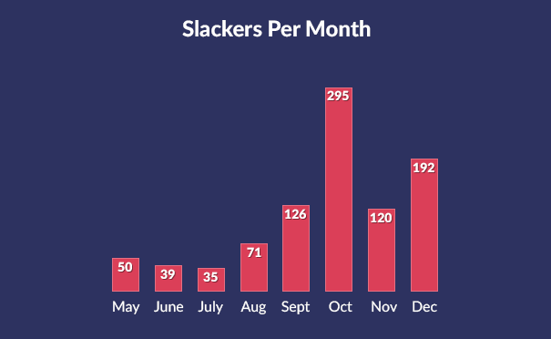
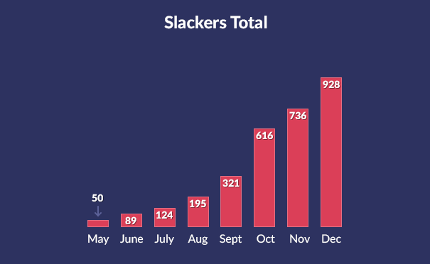
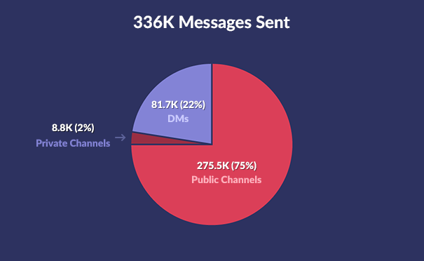
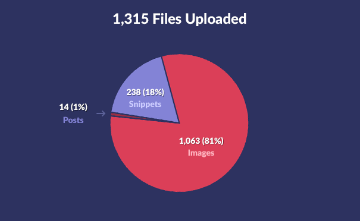

Unreal Slackers 2015 Stats
In May 2015, I started Unreal Slackers to provide a friendly, welcoming place where people interested in making things with Unreal Engine could talk shop and share their passion for creating, regardless of skill level or experience. Now that 2015 has come to an end, I thought it would be fun to share some stats on the growth of Unreal Slackers. Graphs and charts incoming!

As you can see from the huge spike, October brought in the most new members by far. This was likely due to the Epic MegaJam, a week-long Unreal Engine game jam that attracted over 200 developers and gave out a ton of prizes. I popped up a #gamejam channel dedicated to helping people find team members, discuss theme ideas and share progress along the way. This channel now temporarily pops up for a week every time Epic hosts a monthly game jam.

This chart is just unreal (pun very much intended). Growth was slow and steady at first, but it’s been surging recently and doesn’t show any signs of stopping. It’s hard to believe we’re nearing 1,000 members after just 7 months.

This comes out to an average of 48,000 messages per month. We talk a lot!

It comes as no surprise that the most commonly uploaded files are images. Sure, everyone is working hard on their Unreal Engine projects; but we all need a funny gif now and then.
Code snippets are a great feature of Slack that makes it easier to get programming help, so it’s great to see those getting a lot of use.
Looking Forward
2015 was a great year for Unreal Engine, and 2016 promises to top it. I have a lot in store for Unreal Slackers this year, including a new website, a friendlier signup URL, learning resources and initiatives to help promote the awesome work in our community. I’d also love to do a more in-depth stats report for our one-year anniversary in May.
Unreal Slackers has attracted all sorts of amazing people. Designers, programmers, artists, marketplace authors and even some of the Epic Games staff. There are dedicated channels for discussing Blueprint, VR, audio, animation and so much more. Anyone with an interest in using Unreal Engine is welcome, regardless of skill level or experience.
If you’re working with Unreal Engine and looking for a place to hang out, talk shop or just goof off with like-minded people, join us for free.
Here’s to an amazing 2016!